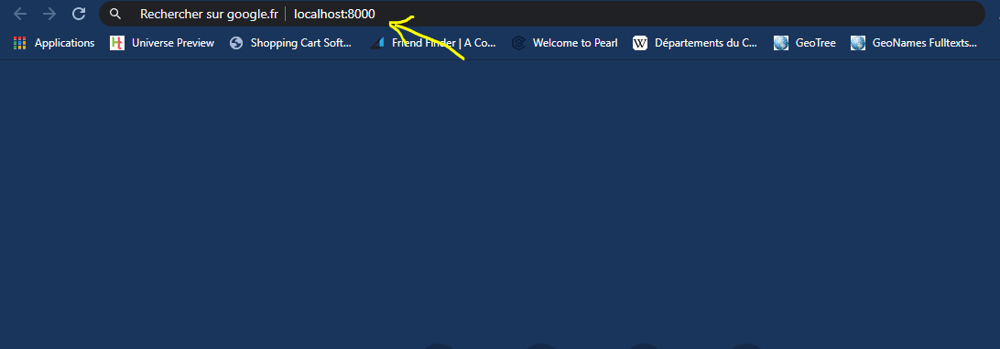
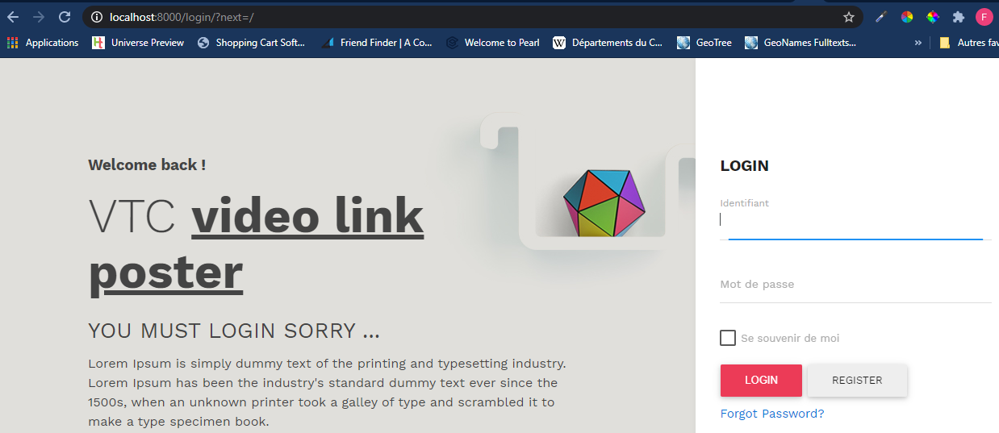
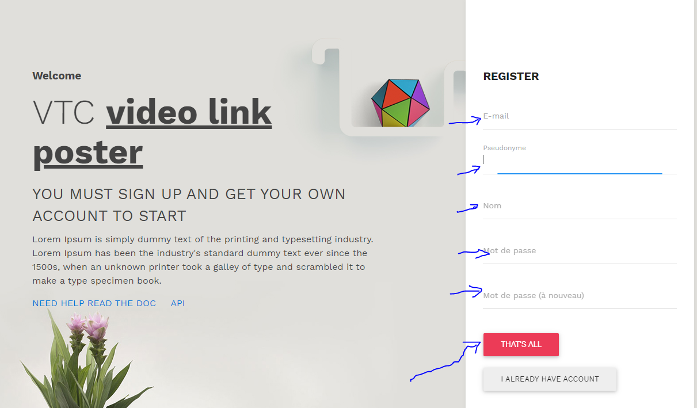
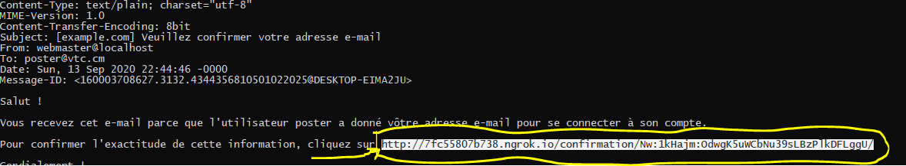
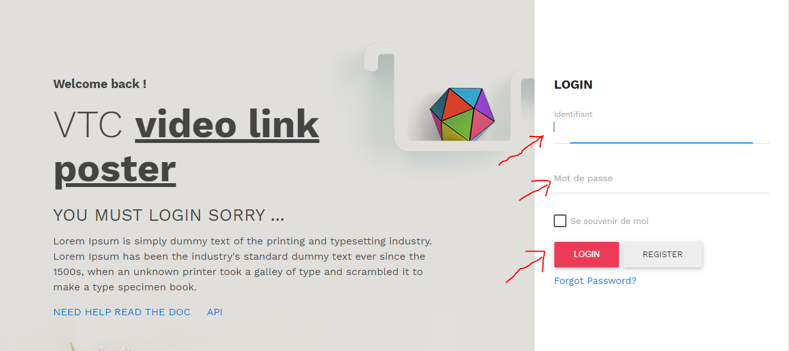
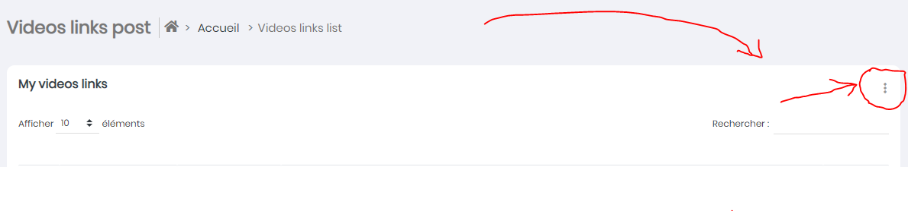

3. Launching the app¶
3.1. First time or not¶
If this is your first time to launch the application, then know that you should first launch your browser example for me it’s chrome and once launched go to the urls area and type: localhost:8000
{kind=link}
Once entered press the Enter key. That’s it.
{kind=link}
You should register first before you can post a link to click on the register button.
{kind=link}
Once the registration form is correctly filled in go to your console and select the generated registration confirmation link because remember you are on a server running locally.
{kind=link}
Paste this link on the URL field and press Enter. Then click on the button to confirm your registration Now login with your username or e-mail address and then your password and click on the login button.
{kind=link}
Now that you are connected, click on the three vertical buttons on your right you will have a modal window then finally indicate the name of your link and its address, finally click on the save button. Now you have just recorded your first video link. That’s all you have to do
{kind=link}